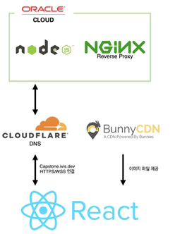
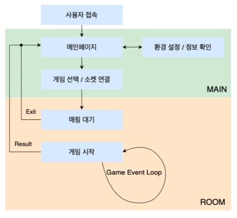
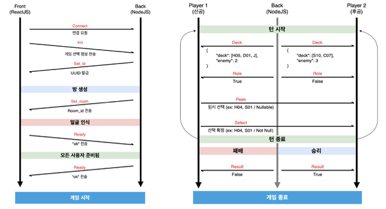
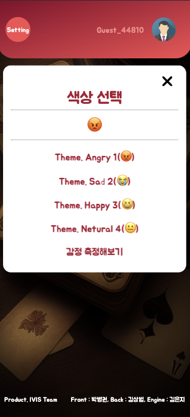
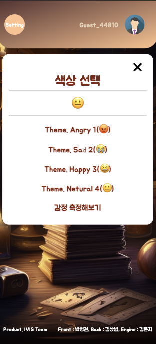

저를 소개합니다.
2021. 03 ~ 2023. 12 연구실 활동일지
온라인 보드게임 팀 프로젝트
내 차 꾸미기 팀 프로젝트
내 블로그 만들기 프로젝트
저를 소개합니다.
2021. 03 ~ 2023. 12 연구실 활동일지
온라인 보드게임 팀 프로젝트
내 차 꾸미기 팀 프로젝트
내 블로그 만들기 프로젝트
Languages : JavaScript TypeScript C++
Tech Stack : ReactJS NextJS NodeJS
Github : Go!
Blog : Go!
Education
[18.03 ~ 24.02] Changwon National University, 경남 창원대 정보통신공학과 졸업
[23.07 ~ 23.08] HMG Softeer BootCamp 2nd, 현대 소프티어 2기 수료
안녕하세요! 프론트엔드 개발자(FE) 박병권입니다. 제 포트폴리오 사이트에 방문해주셔서 감사합니다.
제가 경험했던 프로젝트 중 가장 기억에 남는 프로젝트를 소개하려합니다!
Activities
2021 SW창의캠프 해커톤: Link - 프로그래밍을 할 줄 모르던 때 연구실 동료와 함께 참가한 캠프식 해커톤, 처음으로 코딩을 접하게 되었습니다.
임베디드 OS개발 프로젝트 Link - 당시 CS지식이 부족해 책을 이해하는 데 힘이 들었습니다. 이 책의 가장 큰 재미는 C printf 함수 구현이였습니다.
창업유망팀 300 플라워드 프로젝트 백엔드 개발 Link - 창업동아리로 시작하여 플라워드 라는 플랫폼을 기획/제작 하였습니다. 처음으로 Node.js에 대해서, 그리고 서비스를 개발하였습니다.
2022 VanillaJS, React, NodeJS, Algorithm 스터디 Link - 2022년, 연구실장이 되어 총 4개의 스터디를 진행하여 스펙업을 이루었습니다.
- NodeJS 스터디 Git Link , ReactJS 스터디 Git LinkIVIS 신입부원 모집 페이지, 프론트엔드 개발 Link - 2023년, 신입부원 모집을 위해서 연구실 동료와 개발하였습니다. 처음으로, 팀 협업을 경험한 프로젝트입니다.
- IVIS-FE Git Link4th PathHack, 패스해커톤 기획/프론트엔드 개발 Link - 새로운 연구실 동료와 참여한 무박 2일 해커톤으로, 이때부터 본격적으로 프론트엔드 개발을 시작하였습니다.
자바스크립트 스터디 발표 Link - 연구실 후배들을 위해 단기로 자바스크립트 스터디를 개설하여 가르쳐주는 방식으로 스터디를 진행하였습니다.
Language : JavaScript
Lib : React, Socket.io, react-router-dom, axios, styled-components, face-api ...
Introduce
온라인 보드게임의 한계를 극복하기 위해 '감정 확인' 이라는 시스템을 도입하여, 사용자의 카메라를 통해 감정을 분석해 이모지 형태로 보여지게 됩니다.
데스크탑 환경 뿐만 아니라 모바일 환경에서 사용할 수 있도록 반응형으로 디자인하였으며, 클라이언트와 서버 간 지속적인 통신을 위해 socket.io 라이브러리를 사용하였습니다.
사용자와 사용자끼리 매칭할 수 있는 멀티플레이 및 AI와 대전할 수 있는 싱글플레이를 지원합니다.
구현된 게임은 조커뽑기, 동물 포커(by 바퀴벌레 포커) 두 종류가 있습니다.
- CI/CD, 프론트엔드 블록도
CI/CD
프론트엔드 블록도
- 게임 흐름도 및 소켓통신 네이밍
방 개설, 입장, 게임 시작 flow
- 카메라 모듈을 통해, 감정을 측정하여(faceapi) background color를 자동으로 바꾸는 기능
화난 감정의 경우
무표정의 경우
- 모바일 디바이스 웹앱 환경에서 Media API getUserMedia를 로컬환경에서 호출하려할 때 벌어지는 문제 및 해결
- 데스크탑 로컬 환경에서는 정상적으로 구동이 된다.
- 그러나 모바일 환경에선 로컬호스트가 아니기 때문(ip를 타고 들어가기 때문) Https 즉, SSL 인증서를 받아야한다.
- chrome 리모트 디버깅 툴을 사용하여 데스크탑 환경에서의 제어를 모바일과 연동시킨다. (8080 port -> 3000 으로 원격제어)
- 모바일 디바이스에서 카메라를 제어할 수 있게 된다.
내용 4
내용 5